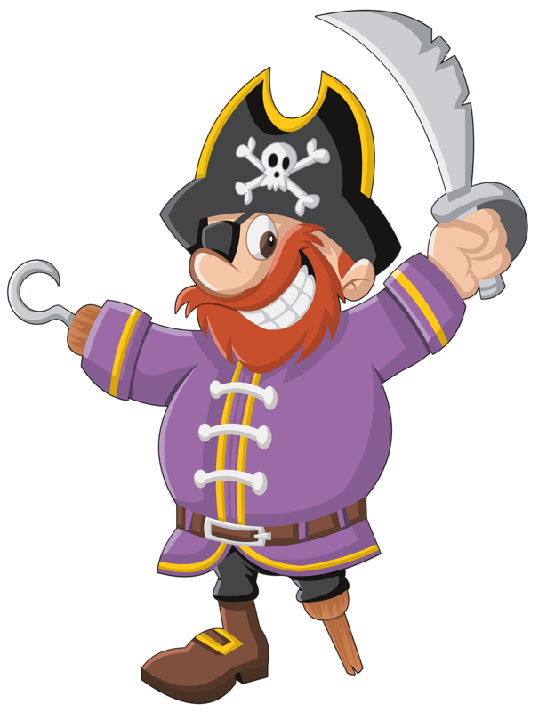

<ion-header>
  <!-- style="--background: url('../../assets/images/background-repeat.jpg');" -->
  <ion-toolbar>
    <ion-buttons slot="start"> 
      <ion-back-button></ion-back-button> 
    </ion-buttons>
    
    <ion-title>Juegos completados</ion-title>
    <ion-buttons slot="end">    
      <ion-button [routerLink]="['/']" style="margin: 20px;">
        <ion-icon name="home"></ion-icon>
        <!-- <ion-label style="margin:4px">Inicio</ion-label> -->
      </ion-button>
    </ion-buttons>
  </ion-toolbar>
</ion-header>

<loading-bar *ngIf="showLoadIcon"></loading-bar>

<ion-content *ngIf="gamesPlayed">
  <div style="max-width: 75%;" *ngIf="gamesPlayed.length==0; else mostrarResultados">

    <div class="pirata">
      <div class="speech-bubble">
        <ion-label color="light" style="font-weight: bold;">
          Parece que no hay nada que mostrar.
          Completa un juego y vuelve aquí.
        </ion-label>
        
      </div>
      
      <div>
        
      </div>
    </div>

  </div>
  <ng-template #mostrarResultados >
  <ion-item *ngFor="let game of gamesPlayed" [routerLink]="['/partida','jugado', '']" 
  [queryParams]="{date: game.date, score:game.score, response:game.response, solution:game.game.solution, title: game.game.title, bound:game.game.bound,points:game.game.points,imageURL:game.game.imageURL,description:game.game.description}">
    <ion-thumbnail slot="start">
      
    </ion-thumbnail>
    <ion-label>{{game.game.title}} - {{game.game.points}} puntos</ion-label>
    <ion-icon *ngIf=!isMobile name="arrow-forward" slot="end"></ion-icon>
  </ion-item>
</ng-template>
</ion-content>
